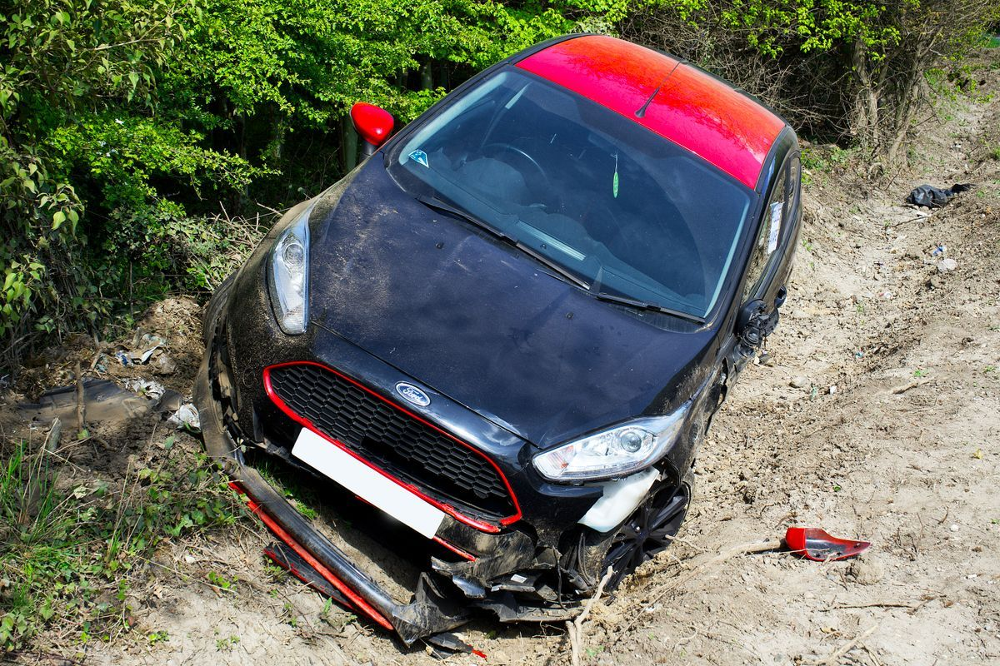
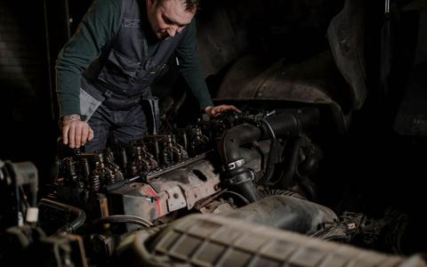

Direito Civil Vol. 1 2026 · 8 de novembro de 2026Série Direitos do motorista

Batida com o caminhão da empresa: quem paga os danos do outro veículo?
O empregador responde pelos danos causados pelo empregado no trabalho.
Essa responsabilidade existe mesmo sem culpa da empresa.
Cobrar do motorista depois exige acordo prévio ou dolo, conforme a CLT.
Entenda melhor 1 min de leitura
O que a lei prevê
O Código Civil diz que o empregador é responsável pela reparação civil dos danos causados por seus empregados no exercício do trabalho ou em razão dele. Essa responsabilidade existe ainda que não haja culpa da empresa.
Quem paga o dano causado por outra pessoa pode, depois, cobrar dela o que pagou. Na relação de emprego, porém, a CLT limita esse caminho: o desconto por dano causado pelo empregado só é lícito se essa possibilidade foi combinada ou se houve dolo.
Além disso, a Lei do Motorista diz que o motorista empregado não responde por prejuízo decorrente de ação de terceiro, salvo dolo ou desídia comprovados.
Na prática
- A vítima do acidente pode cobrar da empresa dona do caminhão.
- Registre o boletim de ocorrência e avise a empresa imediatamente.
- Desconto no salário pelo conserto do outro veículo segue as mesmas limitações da CLT.
Perguntas frequentes
A vítima pode processar o motorista diretamente?
A lei responsabiliza o empregador pelos atos do empregado no trabalho (Código Civil, arts. 932, III, e 933). O caminho mais comum é a cobrança à empresa; cada caso depende dos fatos.
A empresa pode descontar do meu salário o que pagou?
Só se o desconto por dano foi combinado ou se houve dolo (CLT, art. 462, § 1º).
- Código Civil, arts. 932, III, 933 e 934
- CLT, art. 462, § 1º
- Lei 13.103/2015, art. 2º, V, a
Publicado em . Texto informativo. Cada situação depende de análise própria, com base nos documentos e nos fatos do caso.

Filipe Ferreira
Filipe Ferreira Santana, advogado, OAB/ES 37.159. Pós-graduação em Direito de Família em curso na FMP. Filiado ao IBDFAM.
O escritório Ferreira Advogados atua em Direito de Família, Sucessões, Direito Trabalhista, Direito Civil, Direito do Consumidor e Direito Previdenciário, com atendimento presencial em Linhares/ES e on-line.
Para tirar dúvidas sobre este assunto ou agendar um atendimento, o contato é pelo WhatsApp.
Leia também
Motorista de caminhão ou de ônibus tem direito a aposentadoria especial?
Depende da época trabalhada.Jornada exaustiva do motorista pode gerar indenização por dano existencial?
Pode, se comprovada.